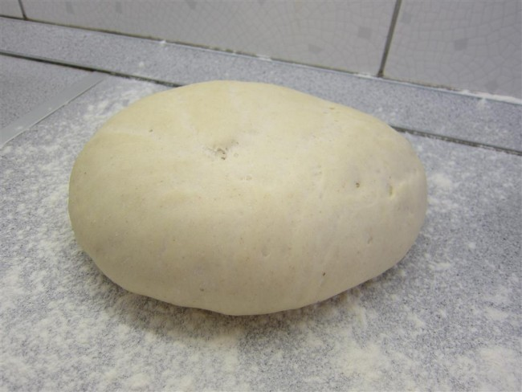

How to make Pizza dough
Back to Homepage

Image of raw pizza dough. Copyright: rantotthuswokban.com
Description
Dough for the most famous dish worldwide: pizza. Easy to make and tastes great (once baked ofc).
Ingredients
- Flour 500g
- Lukewarm water 300ml
- Olive oil 2 spoons
- Yeast half a pack (25g)
- Salt
- Sugar
Steps
- Mix all liquids, add sugar and yeast. Wait for 15 mins.
- Add liquid mix to flour and salt
- Mix with hands until solid dough is done. Should not stick to your hands anymore
- Cover up and leave at a warm place for 30 mins
- Make 4 large pizzas out of the dough and bake for 7-8 mins at 250 degree Celsius